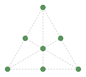

Tree Planting Problem
Tienes 7 árboles que plantar. Encuentra una configuración en un plano para formar la mayor cantidad posible de hileras de árboles. Cada hilera debe cumplir lo siguiente:
- 3 árboles forman una hilera
- tienen que estar conectados por una línea recta
-------
You have to plant 7 trees. Find a planar configuration that produces as many rows as possible. Each row must satisfy:
- 3 trees form a row
- a straight line must connect them
This puzzle is a special case of the Orchard-planting problem.
The question
Solution
The solution (as displayed below) is to place 3 points at the vertices of an equilateral triangle, 3 at the mid-points of its sides, and 1 in the centre.

Try doing the problem with different number of trees. Get more information in this Wikipedia page.